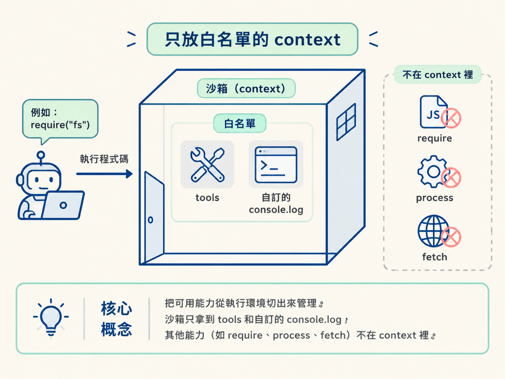
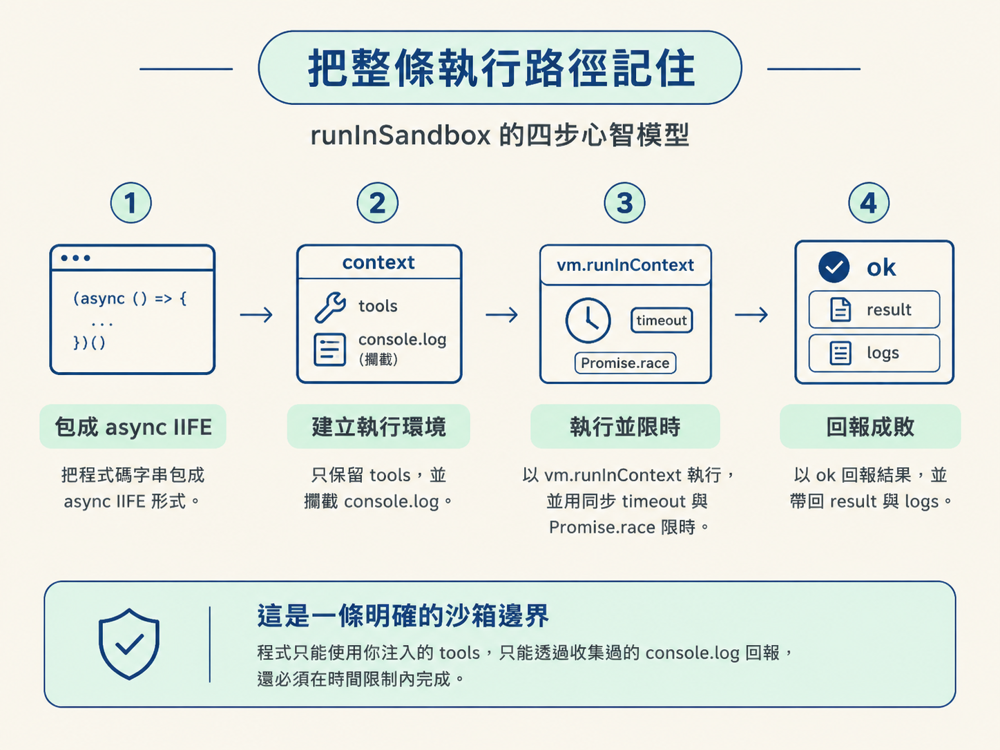

runInSandbox：替 agent 畫出 node:vm 沙箱邊界agent 產生的程式碼本質上只是一段字串。問題是：這段字串不能直接在 server 裡隨意執行，否則它可能碰到不該碰的能力，或因為無窮迴圈把整個請求卡住。這一步要做的，就是把程式放進一間只有指定工具、而且有時間限制的空房間。
runInSandbox 是沙箱唯一的入口。它的簽名直接定義了什麼能進來：
runInSandbox(code: string, api: SandboxApi, options?: { timeoutMs?: number })code：模型寫出的程式碼，傳進來時只是一個字串。api：sandbox API，也就是函式白名單。沙箱裡的程式只能呼叫這張表上的能力。options.timeoutMs：逾時毫秒數，預設為 2 秒（2000）。它用來限制程式的執行時間，避免模型寫出的程式長時間卡住 server。沙箱另外維護 logs: string[]，攔截其中所有 console.log 的輸出，最後再一併回傳。因為沙箱裡的輸出不會自動出現在外部終端機。
用 vm.createContext 建立隔離的執行環境。這裡的規則很直接：你放進 context 的東西，才是沙箱看得到的東西。
const context = createContext({
tools: api, // 白名單能力，暴露成 sandbox 內的 global `tools`
console: {
log: (...args: unknown[]) => {
logs.push(args.map((a) => String(a)).join(" "));
},
},
});這層存在的原因，是把「可用能力」從執行環境切出來管理。沙箱只拿到 tools 和自訂的 console.log；require、process、fetch 不在 context 裡，因此模型即使寫出 require("fs")，也沒有對應的能力可以使用。

console 也是刻意替換的。真正的 console.log 會直接印到 server 終端機；這裡改成攔截函式，把每個參數先用 String() 轉成字串，再用空白接起來放進 logs。參數型別是 unknown[]，所以不能直接假設它們已經是字串。
awaitagent 很可能會寫出 await tools.getCharges(...)。但直接把這段字串交給 runInContext 執行時，它並不在 async 函式裡，頂層 await 會造成語法錯誤。
因此先把程式包進立即執行的 async 函式（async IIFE）：
const wrapped = `(async () => { ${code} })()`;包裝後，模型可以直接在自己的程式碼裡使用 await，不必知道外層執行器的細節。這只是語法上的便利，不會增加任何安全性；沙箱能碰到什麼，仍然由 context 裡注入的能力決定。
執行時使用 vm.runInContext，把包好的程式、context 和 timeout 傳進去。非同步程式不能直接無限期地 await，所以再用 Promise.race 讓「程式完成」與「計時器到期」競速：
function withTimeout<T>(promise: Promise<T>, ms: number): Promise<T> {
return Promise.race([
promise,
new Promise<never>((_, reject) =>
setTimeout(() => reject(new Error("Timed out")), ms),
),
]);
}程式先完成，就拿到它的結果；計時器先觸發，就會 reject 並進入錯誤路徑。
這裡有兩種不同的卡住情況：
while (true) {}，由 runInContext 的 timeout 選項處理。withTimeout 的 Promise.race 回報逾時。Promise.race 只決定要先回傳哪個結果，不會取消已經開始的底層 Promise；它的責任是讓呼叫端不必無限期等待。
ok 明確回報成敗最後把執行結果包成成功／失敗 union：
try {
const result = await withTimeout(runInContext(wrapped, context, { timeout: timeoutMs }), timeoutMs);
return { ok: true, result, logs };
} catch (error) {
return { ok: false, error: error instanceof Error ? error.message : String(error) };
}ok 不是多餘的包裝。這個結果通常會交給模型繼續判斷；與其讓模型猜測「有沒有 error 欄位代表失敗」，不如直接提供 ok: true 或 ok: false。成功時讀 result，失敗時讀 error，下一步就有明確分支。
runInSandbox 的心智模型可以縮成四步：
tools 與攔截版 console.log 的 context。vm.runInContext 執行，並用同步 timeout 與 Promise.race 限制等待時間。ok 回報成功或失敗，並在成功時帶回 result 與 logs。最後得到的不是一個任意執行器，而是一條清楚的沙箱邊界：程式只能使用你注入的 tools，只能透過收集過的 console.log 回報，還必須在時間限制內完成。
